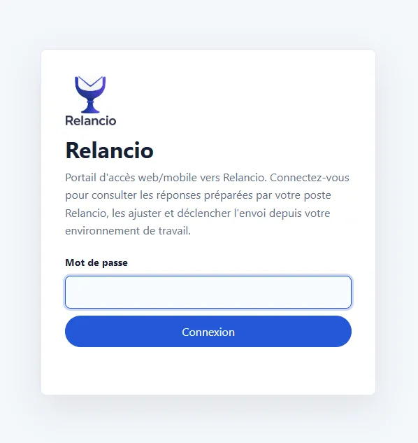
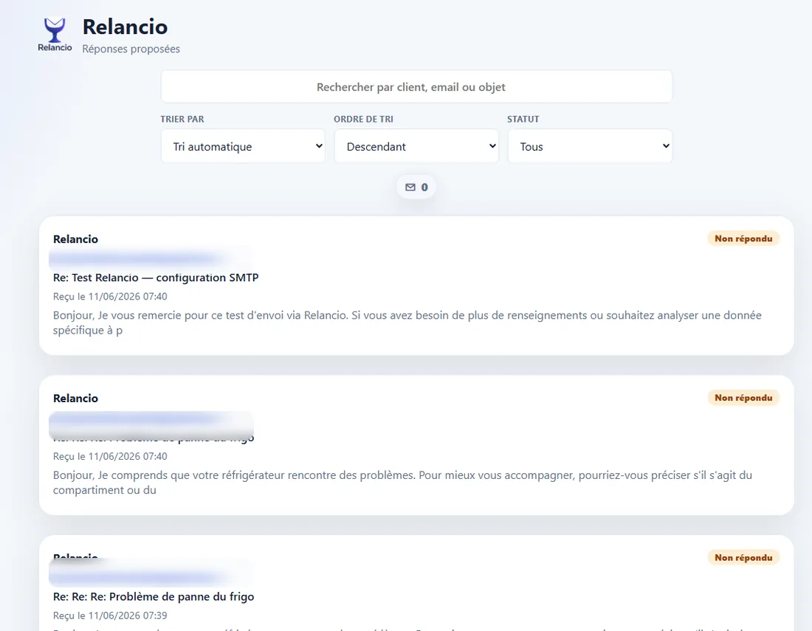
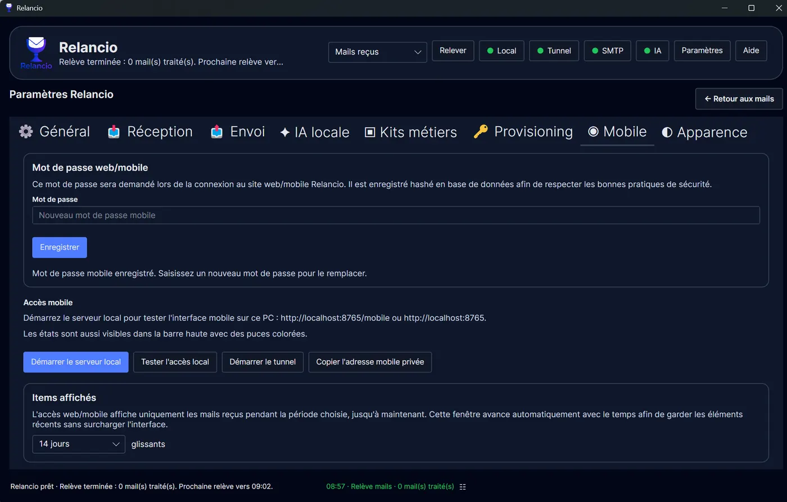

Relancio
Accès web/mobile
Une fonctionnalité complémentaire et optionnelle pour consulter et valider à distance.
Fonction complémentaire optionnelle
Relancio s'utilise d'abord depuis l'application desktop. L'accès web/mobile est un complément utile pour consulter et valider certaines réponses à distance. Il nécessite une clé ou un code de provisioning fourni par l'auteur, qui peut être accordé ou non.
Ce que permet le portail web/mobile
Une fois l'accès disponible et configuré, le portail permet de consulter les réponses proposées, rechercher par client, email ou objet, trier la liste, filtrer par statut, ouvrir un mail, corriger le nom ou l'email client, modifier la réponse, sauvegarder ou envoyer manuellement.



Configuration côté application
Les réglages se font dans l'application desktop, notamment les onglets Provisioning et Mobile. Le mot de passe web/mobile est stocké hashé localement. L'adresse privée n'est utile que si l'accès distant a été provisionné.
L'onglet Mobile permet aussi de démarrer le serveur local, tester l'accès local, démarrer le tunnel et copier l'adresse mobile privée. La période d'affichage limite les éléments visibles aux mails récents.

Pas d’automatisation cachée
Même depuis le web/mobile, l’utilisateur doit ouvrir la réponse, la relire puis cliquer explicitement sur Envoyer. Le portail n’ajoute pas de mode d’envoi automatique.